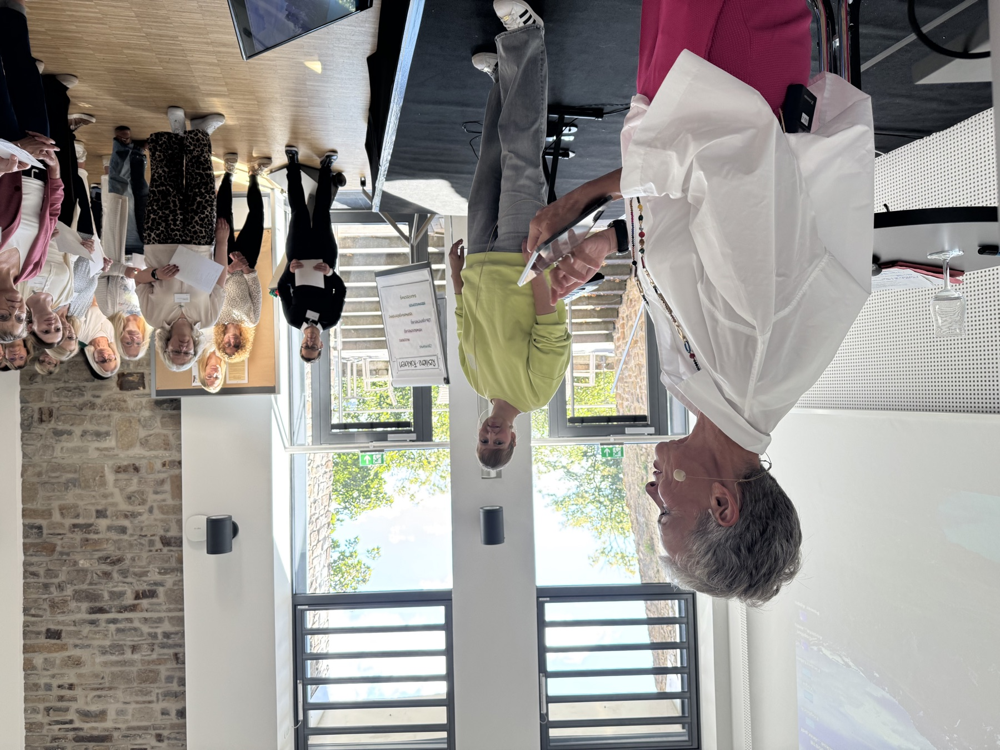

09:15
Verstehen, was sich gerade verändert.
Inhouse-Assistenztage für Organisationen im Wandel
Ich entwickle Assistenztage, die begeistern, weiterbilden und Assistenzkräfte ihre neuen Rollen erkennen lassen – mit konkretem Handwerkszeug für den Arbeitsalltag.
Verstehen, was sich gerade verändert.
Handwerkszeug, das morgen hilft.
Austausch, der weiterarbeitet.
Nicht über die Zielgruppe hinweg
Ich beginne nicht mit Themen. Ich beginne mit den Menschen, für die der Tag gedacht ist.
Der inhaltliche Kern
Assistenz ist nicht überall gleich. Aufgaben, Selbstverständnis, Veränderungsdruck und Reifegrad unterscheiden sich. Genau deshalb entsteht das Programm nicht aus einer fertigen Themenliste.
Ich spreche mit Auftraggebenden und ausgewählten Menschen aus der Zielgruppe, prüfe vorhandene Informationen und erkenne, welche Fragen offiziell genannt werden – und welche darunter liegen.
Aus Unternehmensziel, aktueller Rolle und Bedarf entsteht eine Leitidee. Sie entscheidet, welche Themen dazugehören, welche Formate tragen und welche Speaker wirklich passen.
Ein mögliches Format
Die genaue Architektur entsteht immer aus Ihrem Auftrag. So kann eine mehrtägige Assistenzkonferenz unterschiedliche Bedürfnisse sinnvoll verbinden:
Ein geschützter Raum für Austausch: Was funktioniert bereits? Wo hakt es? Was können Kolleginnen und Kollegen voneinander übernehmen?
Neue Methoden, Prozesse und Technologien werden verständlich, konkret und anschlussfähig für den jeweiligen Arbeitsalltag.
Selbstführung, Kommunikation, Sichtbarkeit und Zusammenarbeit stärken die Fähigkeit, die neue Rolle aktiv auszufüllen.
Kein starres Dreitagespaket. Auch ein kompakter Fachtag oder eine andere Abfolge kann richtig sein. Entscheidend ist die Wirkung, nicht die Schablone.
Mögliche Themenfelder
Die Auswahl folgt dem Bedarf Ihrer Zielgruppe. Themen werden nicht nebeneinandergestellt, sondern über eine gemeinsame Frage miteinander verbunden.
Vom Organisieren zum Mitdenken, Mitgestalten und verantwortlichen Sparringspartner.
KI, digitale Werkzeuge, Prozesse und Methoden so vermitteln, dass Anwendung statt Überforderung entsteht.
Klar auftreten, Erwartungen verhandeln, Zusammenarbeit steuern und den eigenen Beitrag sichtbar machen.
Prioritäten, Grenzen, Resilienz und Entscheidungen in einer anspruchsvollen Schnittstellenrolle.
Austausch nicht als nette Pause behandeln, sondern als bewusstes Lern- und Arbeitsformat.

Erfahrung im Raum
Acht selbst konzipierte Assistenzkonferenzen geben mir Musterwissen. Die Gespräche für Ihren Auftrag zeigen mir, was diesmal anders ist.
Ich habe erlebt, welche Speaker auf Hochglanz überzeugen und im Raum nicht ankommen – und welche die Sprache der Zielgruppe finden. Ich weiß, wann Zuhören trägt, wann Bewegung nötig ist und wann ein offenes Gespräch mehr bewirkt als der nächste Vortrag.
Was ich übernehmen kann
Sie buchen die Teile, die Sie brauchen. Ich halte dabei den inhaltlichen Zusammenhang im Blick und spreche Widersprüche oder Lücken früh an.
Zielgruppenanalyse, Leitidee, Themenfelder, Dramaturgie und Formate.
Recherche, Auswahl, Ansprache, Koordination und inhaltliches Briefing.
Vorbereitung und persönliche Moderation mit klaren Übergängen, Beteiligung und inhaltlichem roten Faden.
Eigene Ansicht, Kapazitäten und Warteliste, Buchung und Stornierung von Tracks, Erinnerungen, Feedback und Auswertung.
Preis nach Erstgespräch – passend zu Umfang, Vorarbeit und Verantwortungsbereich.
Termin buchenStimmen aus der Praxis
Die Zitate werden ergänzt, sobald die Freigaben vorliegen. Bis dahin bleiben sie bewusst als Platzhalter sichtbar.
Platzhalter · Kundenstimme 01Freigegebenes Zitat zu Zielgruppenverständnis, Konzeption und Zusammenarbeit folgt.
Platzhalter · Kundenstimme 02Freigegebenes Zitat zu Dramaturgie, Speaker-Auswahl oder Moderation folgt.
Kurz geklärt
Nein. Entscheidend ist, dass eine Assistenzgruppe gemeinsame Themen, Veränderungen oder Entwicklungsziele hat. Umfang und Format werden an Gruppengröße und Ausgangslage angepasst.
Nein. Eine der wichtigsten Leistungen ist gerade, aus Ziel, Gesprächen und Zielgruppenrealität die tragfähigen Schwerpunkte zu entwickeln.
Ja. Ich prüfe dabei trotzdem, ob Themen, Reihenfolge und Profile zusammenpassen, und weise offen auf Dopplungen oder Lücken hin.
Ja. Wir schauen gemeinsam auf bisherige Rückmeldungen, aktuelle Ziele und die veränderte Situation der Zielgruppe. Daraus entsteht kein kompletter Neustart um jeden Preis, sondern die passende Weiterentwicklung.
Lassen Sie uns anfangen
Im kostenfreien Erstgespräch klären wir Ziel, Ausgangslage und den sinnvollsten nächsten Schritt.